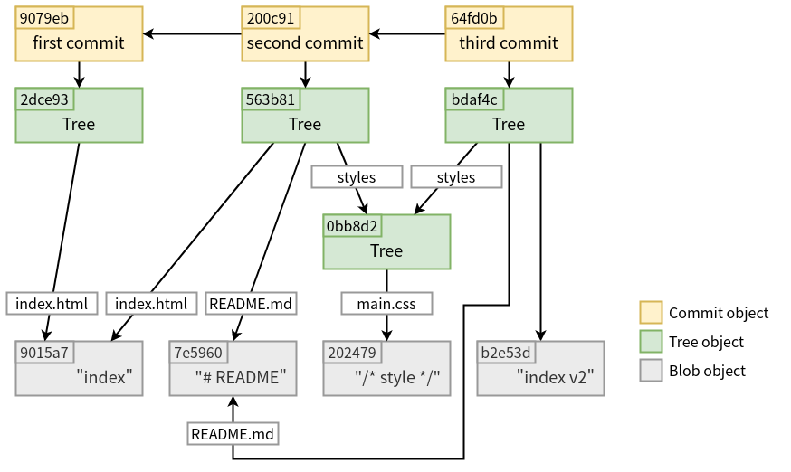

<!DOCTYPE html><html><head><meta name="generator" content="Hexo 3.9.0"><meta charset="utf-8"><title>深入 Git：Git 物件儲存 - commit 物件 | Titangene Blog</title><meta name="description" content="利用 blog 紀錄學習歷程"><meta http-equiv="X-UA-Compatible" content="IE=edge"><meta name="viewport" content="width=device-width,initial-scale=1,maximum-scale=1"><meta name="HandheldFriendly" content="True"><meta name="apple-mobile-web-app-capable" content="yes"><meta name="author" content="Titangene"><link rel="shortcut icon" href="/favicon.ico"><link rel="alternate" href="/atom.xml" title="Titangene Blog"><meta name="description" content="本篇將深入探討 Git 如何運作，在執行 git commit 時，Git 會如何建立和儲存 commit 物件。"><meta name="keywords" content="w3HexSchool,深入 Git"><meta property="og:type" content="article"><meta property="og:title" content="深入 Git：Git 物件儲存 - commit 物件"><meta property="og:url" content="https://titangene.github.io/article/git-commit-object.html"><meta property="og:site_name" content="Titangene Blog"><meta property="og:description" content="本篇將深入探討 Git 如何運作，在執行 git commit 時，Git 會如何建立和儲存 commit 物件。"><meta property="og:locale" content="zh-tw"><meta property="og:image" content="https://titangene.github.io/images/cover/git.jpg"><meta property="og:updated_time" content="2020-03-15T16:00:54.139Z"><meta name="twitter:card" content="summary_large_image"><meta name="twitter:title" content="深入 Git：Git 物件儲存 - commit 物件"><meta name="twitter:description" content="本篇將深入探討 Git 如何運作，在執行 git commit 時，Git 會如何建立和儲存 commit 物件。"><meta name="twitter:image" content="https://titangene.github.io/images/cover/git.jpg"><meta name="twitter:creator" content="@titangeneTW"><meta name="twitter:site" content="@titangene_blog"><meta property="fb:admins" content="100001106016019"><meta property="fb:app_id" content="2470546159839111"><meta property="og:image:width" content="1200"><meta property="og:image:height" content="630"><meta name="google-site-verification" content="AaJ39L7h-nWwJjXJMhAMtXSF6H6BUgGWXC80kYvLic8"><link rel="stylesheet" href="//fonts.googleapis.com/css?family=Inconsolata|Titillium+Web"><link href="https://fonts.googleapis.com/css?family=Source+Code+Pro&display=swap" rel="stylesheet"><link rel="stylesheet" href="//use.fontawesome.com/releases/v5.7.0/css/all.css" integrity="sha384-lZN37f5QGtY3VHgisS14W3ExzMWZxybE1SJSEsQp9S+oqd12jhcu+A56Ebc1zFSJ" crossorigin="anonymous"><link rel="stylesheet" href="/style.css"><script async src="https://www.googletagmanager.com/gtag/js?id=UA-129758206-1"></script><script>!function(a){function n(){dataLayer.push(arguments)}a.dataLayer=a.dataLayer||[],n("js",new Date),n("config","UA-129758206-1")}(window)</script><script>function setLoadingBarProgress(e){document.getElementById("loading-bar").style.width=e+"%"}</script></head></html><body><div id="loading-bar-wrapper"><div id="loading-bar"></div></div><script>setLoadingBarProgress(20)</script><header class="l_header"><div class="wrapper"><div class="nav-main container container--flex"><a class="logo flat-box" href="/">Titangene Blog</a><div class="menu"><ul class="h-list"><li><a class="flat-box nav-home" href="/">Home</a></li><li><a class="flat-box nav-archives" href="/archives">Archives</a></li></ul><div class="underline"></div></div><div class="m_search"><form name="searchform" class="form u-search-form"><input type="text" class="input u-search-input" placeholder="Search"> <i class="fas fa-search"></i></form></div><ul class="switcher h-list"><li class="s-search"><a class="fas fa-search" href="javascript:void(0)"></a></li><li class="s-menu"><a class="fas fa-bars" href="javascript:void(0)"></a></li></ul></div><div class="nav-sub container container--flex"><a class="logo flat-box" href="/">Titangene Blog</a><ul class="switcher h-list"><li class="s-comment"><a class="far fa-comment-alt" href="javascript:void(0)"></a></li><li class="s-top"><a class="fas fa-arrow-up" href="javascript:void(0)"></a></li><li class="s-toc"><a class="fas fa-list-ol" href="javascript:void(0)"></a></li></ul></div></div></header><aside class="menu-phone"><nav><a href="/" class="nav-home nav">Home </a><a href="/archives" class="nav-archives nav">Archives</a></nav></aside><script>setLoadingBarProgress(40)</script><div class="l_body"><div class="container clearfix"><div class="l_main"><article id="post-git-commit-object" class="post white-box article-type-post" itemscope itemprop="blogPost"><section class="meta"><h2 class="title"><a href="/article/git-commit-object.html">深入 Git：Git 物件儲存 - commit 物件</a></h2><span class="post-time"><span class="post-meta-item-icon"><i class="fa fa-calendar"></i> </span><span class="post-meta-item-text">發表於</span> <time title="建立時間：2020-03-15 23:58:26" itemprop="dateCreated datePublished" datetime="2020-03-15T23:58:26+08:00">2020-03-15 </time><span class="post-meta-divider">|</span> <span class="post-meta-item-icon"><i class="fa fa-calendar-check"></i> </span><span class="post-meta-item-text">更新於</span> <time title="修改時間：2020-03-16 00:00:54" itemprop="dateModified" datetime="2020-03-16T00:00:54+08:00">2020-03-16</time></span> <span class="comments-count"><span class="post-meta-divider">|</span> <span class="post-meta-item-icon"><i class="fas fa-comment"></i> </span><a href="https://titangene.github.io/article/git-commit-object.html#disqus_thread" class="article-comment-count" data-disqus-identifier="article/git-commit-object.html" itemprop="discussionUrl"></a></span><div class="post-category"><span class="post-meta-item-icon"><i class="fa fa-folder"></i> </span><span class="post-meta-item-text">分類於</span> <span itemprop="about" itemscope itemtype="http://schema.org/Thing"><a href="/categories/git/" itemprop="url" rel="index"><span itemprop="name">Git</span></a></span></div></section><section class="toc-wrapper"><h3>目錄</h3><ol class="toc"><li class="toc-item toc-level-2"><a class="toc-link" href="#準備"><span class="toc-text">準備</span></a></li><li class="toc-item toc-level-2"><a class="toc-link" href="#將第一個檔案加入-index，並建立-tree-物件"><span class="toc-text">將第一個檔案加入 index，並建立 tree 物件</span></a></li><li class="toc-item toc-level-2"><a class="toc-link" href="#建立第一個-commit-物件"><span class="toc-text">建立第一個 commit 物件</span></a><ol class="toc-child"><li class="toc-item toc-level-3"><a class="toc-link" href="#將另外兩個檔案加入-index，並建立-tree-物件"><span class="toc-text">將另外兩個檔案加入 index，並建立 tree 物件</span></a></li></ol></li><li class="toc-item toc-level-2"><a class="toc-link" href="#建立第二個-commit-物件"><span class="toc-text">建立第二個 commit 物件</span></a></li><li class="toc-item toc-level-2"><a class="toc-link" href="#察看歷史紀錄"><span class="toc-text">察看歷史紀錄</span></a></li><li class="toc-item toc-level-2"><a class="toc-link" href="#Git-物件關聯圖"><span class="toc-text">Git 物件關聯圖</span></a></li></ol></section><section class="article typo"><div class="article-entry" itemprop="articleBody"><p></p><p>本篇將深入探討 Git 如何運作，在執行 <code>git commit</code> 時，Git 會如何建立和儲存 commit 物件。</p><a id="more"></a><p>tree 物件會指向追蹤專案的不同 snapshot，若要取得這些 snapshot 就會遇到一些問題：</p><ul><li>必須記得這些 tree 物件的 SHA-1 值 (麻煩)</li><li>snapshot 是誰儲存的</li><li>snapshot 是何時儲存的</li><li>為何要儲存 snapshot</li></ul><p>以上這些就是 commit 物件為你儲存的資訊。</p><h2 id="準備"><a class="header-anchor" href="#準備"></a>準備</h2><p>下面會以這個檔案結構為範例：</p><figure class="highlight shell"><table><tr><td class="gutter"><pre><span class="line">1</span><br><span class="line">2</span><br><span class="line">3</span><br><span class="line">4</span><br><span class="line">5</span><br><span class="line">6</span><br><span class="line">7</span><br><span class="line">8</span><br><span class="line">9</span><br><span class="line">10</span><br><span class="line">11</span><br><span class="line">12</span><br><span class="line">13</span><br><span class="line">14</span><br><span class="line">15</span><br><span class="line">16</span><br><span class="line">17</span><br></pre></td><td class="code"><pre><code class="hljs shell"><span class="hljs-meta">$</span><span class="bash"> mkdir demo</span><br><span class="hljs-meta">$</span><span class="bash"> <span class="hljs-built_in">cd</span> demo</span><br><span class="hljs-meta">$</span><span class="bash"> git init</span><br>Initialized empty Git repository in /home/titan/project/demo/.git/<br><span class="hljs-meta">$</span><span class="bash"> mkdir styles</span><br><span class="hljs-meta">$</span><span class="bash"> <span class="hljs-built_in">echo</span> <span class="hljs-string">"index"</span> &gt; index.html</span><br><span class="hljs-meta">$</span><span class="bash"> <span class="hljs-built_in">echo</span> <span class="hljs-string">"# README"</span> &gt; README.md</span><br><span class="hljs-meta">$</span><span class="bash"> <span class="hljs-built_in">echo</span> <span class="hljs-string">"/* style */"</span> &gt; styles/main.css</span><br><span class="hljs-meta"><br>$</span><span class="bash"> tree      </span><br>.<br>├── index.html<br>├── README.md<br>└── styles<br>    └── main.css<br><br>1 directories, 3 files<br></code></pre></td></tr></table></figure><h2 id="將第一個檔案加入-index，並建立-tree-物件"><a class="header-anchor" href="#將第一個檔案加入-index，並建立-tree-物件"></a>將第一個檔案加入 index，並建立 tree 物件</h2><p>先將 <code>index.html</code> 加入 index，接著將 index 寫至 tree 物件中：</p><figure class="highlight shell"><table><tr><td class="gutter"><pre><span class="line">1</span><br><span class="line">2</span><br><span class="line">3</span><br><span class="line">4</span><br><span class="line">5</span><br></pre></td><td class="code"><pre><code class="hljs shell"><span class="hljs-meta">$</span><span class="bash"> cat index.html</span><br>index<br><span class="hljs-meta">$</span><span class="bash"> git add index.html</span><br><span class="hljs-meta">$</span><span class="bash"> git write-tree</span><br>2dce93ea08ed9059be0a838c6bcf62b7b5c28907<br></code></pre></td></tr></table></figure><div class="info"><p>註：<code>git add</code> 看起來只是將檔案加入 index，但在 Git 的運作原理其實做了很多步驟，詳情可參閱我之前寫的這幾篇，本篇就不再重複說明這些內容：</p><ul><li><a href="https://titangene.github.io/article/git--blob-object.html">深入 Git：Git 物件儲存 - blob 物件</a></li><li><a href="https://titangene.github.io/article/git-tree-object.html">深入 Git：Git 物件儲存 - tree 物件</a></li><li><a href="https://titangene.github.io/article/git-index.html">深入 Git：index 檔案</a></li></ul></div><p>此時在 <code>.git/object</code> 目錄內，已經有兩個 Git 物件，分別為：</p><ul><li><code>9015a7</code> blob 物件：透過 <code>index.html</code> 此檔案產生的</li><li><code>2dce93</code> tree 物件：對應到專案根目錄</li></ul><figure class="highlight shell"><table><tr><td class="gutter"><pre><span class="line">1</span><br><span class="line">2</span><br><span class="line">3</span><br><span class="line">4</span><br><span class="line">5</span><br><span class="line">6</span><br><span class="line">7</span><br><span class="line">8</span><br><span class="line">9</span><br><span class="line">10</span><br><span class="line">11</span><br><span class="line">12</span><br><span class="line">13</span><br><span class="line">14</span><br><span class="line">15</span><br><span class="line">16</span><br><span class="line">17</span><br><span class="line">18</span><br><span class="line">19</span><br><span class="line">20</span><br></pre></td><td class="code"><pre><code class="hljs shell"><span class="hljs-meta">$</span><span class="bash"> tree .git/objects</span><br>.git/objects<br>├── 2d<br>│   └── ce93ea08ed9059be0a838c6bcf62b7b5c28907<br>├── 90<br>│   └── 15a7a32ca0681be64471d3ac2f8c1f24c1040d<br>├── info<br>└── pack<br><br>4 directories, 2 files<br><span class="hljs-meta"><br>$</span><span class="bash"> git cat-file -t 9015a7</span><br>blob<br><span class="hljs-meta">$</span><span class="bash"> git cat-file -p 9015a7    </span><br>index<br><span class="hljs-meta"><br>$</span><span class="bash"> git cat-file -t 2dce93</span><br>tree<br><span class="hljs-meta">$</span><span class="bash"> git cat-file -p 2dce93</span><br>100644 blob 9015a7a32ca0681be64471d3ac2f8c1f24c1040d	index.html<br></code></pre></td></tr></table></figure><h2 id="建立第一個-commit-物件"><a class="header-anchor" href="#建立第一個-commit-物件"></a>建立第一個 commit 物件</h2><p>要建立 commit 物件需使用 <code>git commit-tree</code> 指令，指定一個 tree 物件的 SHA-1 值以及前一個 commit 物件 (第一個 commit 不需要)。</p><p>下面使用剛剛建立的 <code>2dce93</code> 的 tree 物件來建立 commit 物件，並且提供 commit 訊息：</p><figure class="highlight shell"><table><tr><td class="gutter"><pre><span class="line">1</span><br><span class="line">2</span><br></pre></td><td class="code"><pre><code class="hljs shell"><span class="hljs-meta">$</span><span class="bash"> <span class="hljs-built_in">echo</span> <span class="hljs-string">'first commit'</span> | git commit-tree 2dce93</span><br>9079eb3c74f72f1409dc47ef5d7c8763dbd128f6<br></code></pre></td></tr></table></figure><p>commit 物件會根據建立的時間和作者的資訊而建立不同的 SHA-1 值。使用 <code>git cat-file</code> 指令察看剛剛建立的 commit 物件：</p><figure class="highlight shell"><table><tr><td class="gutter"><pre><span class="line">1</span><br><span class="line">2</span><br><span class="line">3</span><br><span class="line">4</span><br><span class="line">5</span><br><span class="line">6</span><br><span class="line">7</span><br><span class="line">8</span><br></pre></td><td class="code"><pre><code class="hljs shell"><span class="hljs-meta">$</span><span class="bash"> git cat-file -t 9079eb</span><br>commit<br><span class="hljs-meta">$</span><span class="bash"> git cat-file -p 9079eb</span><br>tree 2dce93ea08ed9059be0a838c6bcf62b7b5c28907<br>author titangene &lt;titangene.tw@gmail.com&gt; 1584281436 +0800<br>committer titangene &lt;titangene.tw@gmail.com&gt; 1584281436 +0800<br><br>first commit<br></code></pre></td></tr></table></figure><p>commit 物件的格式包含以下內容：</p><ul><li>專案 snapshot 的頂層 tree：也就是專案根目錄對應的 tree 物件</li><li>author/committer 訊息：使用 <code>user.name</code> 和 <code>user.email</code> 的配置和 timestamp<ul><li>author 就是編輯檔案內容的人</li><li>committer 就是 commit 的人</li><li>通常 author 和 committer 會是同一個人</li><li>若透過 email 來發送 patch，就可能發生 author 和 committer 是不同人 <sup class="footnote-ref"><a href="#fn1" id="fnref1">[1]</a></sup> <sup class="footnote-ref"><a href="#fn2" id="fnref2">[2]</a></sup></li></ul></li><li>一個空行 (blank line)</li><li>commit 訊息</li></ul><h3 id="將另外兩個檔案加入-index，並建立-tree-物件"><a class="header-anchor" href="#將另外兩個檔案加入-index，並建立-tree-物件"></a>將另外兩個檔案加入 index，並建立 tree 物件</h3><p>接著將 <code>README.md</code> 和 <code>styles/main.css</code> 加入 index，接著再將 index 寫至 tree 物件中：</p><figure class="highlight shell"><table><tr><td class="gutter"><pre><span class="line">1</span><br><span class="line">2</span><br><span class="line">3</span><br><span class="line">4</span><br><span class="line">5</span><br><span class="line">6</span><br><span class="line">7</span><br><span class="line">8</span><br><span class="line">9</span><br><span class="line">10</span><br></pre></td><td class="code"><pre><code class="hljs shell"><span class="hljs-meta">$</span><span class="bash"> cat README.md</span><br><span class="hljs-meta">#</span><span class="bash"> README</span><br><span class="hljs-meta">$</span><span class="bash"> git add README.md</span><br><span class="hljs-meta"><br>$</span><span class="bash"> cat styles/main.css</span><br>/* style */<br><span class="hljs-meta">$</span><span class="bash"> git add styles/main.css</span><br><span class="hljs-meta"><br>$</span><span class="bash"> git write-tree</span><br>563b8123edfdfd28aeb8bd6cde392a4be9adba2d<br></code></pre></td></tr></table></figure><p>此時在 <code>.git/object</code> 目錄內，多了 4 個 Git 物件，分別為：</p><ul><li><code>7e5960</code> blob 物件：透過 <code>README.md</code> 此檔案產生的</li><li><code>202479</code> blob 物件：透過 <code>styles/main.css</code> 此檔案產生的</li><li><code>0bb8d2</code> tree 物件：對應到 <code>styles</code> 目錄</li><li><code>563b81</code> tree 物件：對應到專案根目錄</li></ul><figure class="highlight shell"><table><tr><td class="gutter"><pre><span class="line">1</span><br><span class="line">2</span><br><span class="line">3</span><br><span class="line">4</span><br><span class="line">5</span><br><span class="line">6</span><br><span class="line">7</span><br><span class="line">8</span><br><span class="line">9</span><br><span class="line">10</span><br><span class="line">11</span><br><span class="line">12</span><br><span class="line">13</span><br><span class="line">14</span><br><span class="line">15</span><br><span class="line">16</span><br><span class="line">17</span><br><span class="line">18</span><br><span class="line">19</span><br><span class="line">20</span><br><span class="line">21</span><br><span class="line">22</span><br><span class="line">23</span><br><span class="line">24</span><br><span class="line">25</span><br><span class="line">26</span><br><span class="line">27</span><br><span class="line">28</span><br><span class="line">29</span><br><span class="line">30</span><br><span class="line">31</span><br><span class="line">32</span><br><span class="line">33</span><br><span class="line">34</span><br><span class="line">35</span><br><span class="line">36</span><br><span class="line">37</span><br><span class="line">38</span><br><span class="line">39</span><br><span class="line">40</span><br><span class="line">41</span><br></pre></td><td class="code"><pre><code class="hljs shell"><span class="hljs-meta">$</span><span class="bash"> tree .git/objects</span><br>.git/objects<br>├── 0b<br>│   └── b8d2a25db76aec1c38bc948ba579959d443790<br>├── 20<br>│   └── 2479c888bf25f40895164be873c63f556a1b76<br>├── 2d<br>│   └── ce93ea08ed9059be0a838c6bcf62b7b5c28907<br>├── 56<br>│   └── 3b8123edfdfd28aeb8bd6cde392a4be9adba2d<br>├── 7e<br>│   └── 59600739c96546163833214c36459e324bad0a<br>├── 90<br>│   ├── 15a7a32ca0681be64471d3ac2f8c1f24c1040d<br>│   └── 79eb3c74f72f1409dc47ef5d7c8763dbd128f6<br>├── info<br>└── pack<br><br>8 directories, 7 files<br><span class="hljs-meta"><br>$</span><span class="bash"> git cat-file -t 7e5960</span><br>blob<br><span class="hljs-meta">$</span><span class="bash"> git cat-file -p 7e5960</span><br><span class="hljs-meta">#</span><span class="bash"> README</span><br><span class="hljs-meta"><br>$</span><span class="bash"> git cat-file -t 202479</span><br>blob<br><span class="hljs-meta">$</span><span class="bash"> git cat-file -p 202479</span><br>/* style */<br><span class="hljs-meta"><br>$</span><span class="bash"> git cat-file -t 0bb8d2</span><br>tree<br><span class="hljs-meta">$</span><span class="bash"> git cat-file -p 0bb8d2</span><br>100644 blob 202479c888bf25f40895164be873c63f556a1b76	main.css<br><span class="hljs-meta"><br>$</span><span class="bash"> git cat-file -t 563b81</span><br>tree<br><span class="hljs-meta">$</span><span class="bash"> git cat-file -p 563b81</span><br>100644 blob 7e59600739c96546163833214c36459e324bad0a	README.md<br>100644 blob 9015a7a32ca0681be64471d3ac2f8c1f24c1040d	index.html<br>040000 tree 0bb8d2a25db76aec1c38bc948ba579959d443790	styles<br></code></pre></td></tr></table></figure><h2 id="建立第二個-commit-物件"><a class="header-anchor" href="#建立第二個-commit-物件"></a>建立第二個 commit 物件</h2><p>接著使用剛剛建立的 <code>563b81</code> 的 tree 物件來建立第二個 commit，並且提供 commit 訊息和指定前一個 commit (也就是 parent commit)：</p><ul><li><code>-p &lt;parent&gt;</code>：指定 parent commit 的 ID，在此範例是第一個 commit 物件的 SHA-1 值</li></ul><figure class="highlight shell"><table><tr><td class="gutter"><pre><span class="line">1</span><br><span class="line">2</span><br></pre></td><td class="code"><pre><code class="hljs shell"><span class="hljs-meta">$</span><span class="bash"> <span class="hljs-built_in">echo</span> <span class="hljs-string">'second commit'</span> | git commit-tree 563b81 -p 9079eb</span><br>200c91c4acb82e529fb8205ea786a17cc10008b6<br></code></pre></td></tr></table></figure><figure class="highlight shell"><table><tr><td class="gutter"><pre><span class="line">1</span><br><span class="line">2</span><br><span class="line">3</span><br><span class="line">4</span><br><span class="line">5</span><br><span class="line">6</span><br><span class="line">7</span><br><span class="line">8</span><br><span class="line">9</span><br></pre></td><td class="code"><pre><code class="hljs shell"><span class="hljs-meta">$</span><span class="bash"> git cat-file -t 200c91</span><br>commit<br><span class="hljs-meta">$</span><span class="bash"> git cat-file -p 200c91</span><br>tree 563b8123edfdfd28aeb8bd6cde392a4be9adba2d<br>parent 9079eb3c74f72f1409dc47ef5d7c8763dbd128f6<br>author titangene &lt;titangene.tw@gmail.com&gt; 1584285257 +0800<br>committer titangene &lt;titangene.tw@gmail.com&gt; 1584285257 +0800<br><br>second commit<br></code></pre></td></tr></table></figure><h2 id="察看歷史紀錄"><a class="header-anchor" href="#察看歷史紀錄"></a>察看歷史紀錄</h2><p>不過到目前為止，都還無法透過 <code>git log</code> 指令來察看剛剛建立的 commit 歷史紀錄，這是因為我們從一開始就是使用底層指令 (plumbing 指令) 來模擬平常我們在用的指令 (porcelain 指令)，而在過程中都沒有建立 <code>master</code> 分支：</p><figure class="highlight shell"><table><tr><td class="gutter"><pre><span class="line">1</span><br><span class="line">2</span><br></pre></td><td class="code"><pre><code class="hljs shell"><span class="hljs-meta">$</span><span class="bash"> git <span class="hljs-built_in">log</span></span><br>fatal: your current branch 'master' does not have any commits yet<br></code></pre></td></tr></table></figure><p>但我們可在 <code>git log</code> 指令上，另外指定最後一個建立的 commit 物件，這樣就能看到剛剛建立的 Git 歷史紀錄了：</p><ul><li><code>--stat</code>：顯示每個 commit 的 diff 資訊 (diffstat)</li></ul><figure class="highlight shell"><table><tr><td class="gutter"><pre><span class="line">1</span><br><span class="line">2</span><br><span class="line">3</span><br><span class="line">4</span><br><span class="line">5</span><br><span class="line">6</span><br><span class="line">7</span><br><span class="line">8</span><br><span class="line">9</span><br><span class="line">10</span><br><span class="line">11</span><br><span class="line">12</span><br><span class="line">13</span><br><span class="line">14</span><br><span class="line">15</span><br><span class="line">16</span><br><span class="line">17</span><br><span class="line">18</span><br><span class="line">19</span><br></pre></td><td class="code"><pre><code class="hljs shell"><span class="hljs-meta">$</span><span class="bash"> git <span class="hljs-built_in">log</span> --<span class="hljs-built_in">stat</span> 200c91      </span><br>commit 200c91c4acb82e529fb8205ea786a17cc10008b6<br>Author: titangene &lt;titangene.tw@gmail.com&gt;<br>Date:   Sun Mar 15 23:14:17 2020 +0800<br><br>    second commit<br><br> README.md       | 1 +<br> styles/main.css | 1 +<br> 2 files changed, 2 insertions(+)<br><br>commit 9079eb3c74f72f1409dc47ef5d7c8763dbd128f6<br>Author: titangene &lt;titangene.tw@gmail.com&gt;<br>Date:   Sun Mar 15 22:10:36 2020 +0800<br><br>    first commit<br><br> index.html | 1 +<br> 1 file changed, 1 insertion(+)<br></code></pre></td></tr></table></figure><h2 id="Git-物件關聯圖"><a class="header-anchor" href="#Git-物件關聯圖"></a>Git 物件關聯圖</h2><p>以上這些就是 Git 在執行 <code>git add</code> 和 <code>git commit</code> 指令時所做的事情：</p><ol><li>儲存已變更檔案的 blob 物件</li><li>更新 index</li><li>利用 index 建立 tree 物件</li><li>建立指向頂層 tree 和 parent commit 的 commit 物件</li></ol><p>這些物件都存在 <code>.git/objects</code> 目錄內。</p><figure class="highlight shell"><table><tr><td class="gutter"><pre><span class="line">1</span><br><span class="line">2</span><br><span class="line">3</span><br><span class="line">4</span><br><span class="line">5</span><br><span class="line">6</span><br><span class="line">7</span><br><span class="line">8</span><br><span class="line">9</span><br></pre></td><td class="code"><pre><code class="hljs shell"><span class="hljs-meta">$</span><span class="bash"> find .git/objects -<span class="hljs-built_in">type</span> f</span><br>.git/objects/2d/ce93ea08ed9059be0a838c6bcf62b7b5c28907 # Tree: ./ dir v1<br>.git/objects/20/0c91c4acb82e529fb8205ea786a17cc10008b6 # Commit: second commit<br>.git/objects/20/2479c888bf25f40895164be873c63f556a1b76 # Blob: main.css<br>.git/objects/7e/59600739c96546163833214c36459e324bad0a # Blob: README.md<br>.git/objects/0b/b8d2a25db76aec1c38bc948ba579959d443790 # Tree: styles dir<br>.git/objects/90/79eb3c74f72f1409dc47ef5d7c8763dbd128f6 # Commit: first commit<br>.git/objects/90/15a7a32ca0681be64471d3ac2f8c1f24c1040d # Blob: index.html<br>.git/objects/56/3b8123edfdfd28aeb8bd6cde392a4be9adba2d # Tree: ./ dir v2<br></code></pre></td></tr></table></figure><p>下圖是這些 Git 物件的關聯圖：</p><p></p><div class="info"><p>雖然看起來很像目錄和子目錄的關係，但在 Git 中是沒有層級關係的，commit 物件形成<a href="https://zh.m.wikipedia.org/wiki/%E6%9C%89%E5%90%91%E6%97%A0%E7%8E%AF%E5%9B%BE" target="_blank" rel="noopener">有向無環圖 (directed acyclic graph，DAG)</a>，commit 物件有 parent commit (有向)，並且 commit 物件的圖是無環的 (從開始到結束不會是同一個物件) <sup class="footnote-ref"><a href="#fn3" id="fnref3">[3]</a></sup>。</p></div><p>資料來源：<a href="https://git-scm.com/book/zh-tw/v2/Git-Internals-Git-Objects#r_tree_objects" target="_blank" rel="noopener">10.2 Git Internals - Git Objects | Pro Git, 2/e</a></p><hr class="footnotes-sep"><section class="footnotes"><ol class="footnotes-list"><li id="fn1" class="footnote-item"><p><a href="https://git-scm.com/book/en/v2/Git-Basics-Viewing-the-Commit-History" target="_blank" rel="noopener">Git - Viewing the Commit History</a> <a href="#fnref1" class="footnote-backref">↩︎</a></p></li><li id="fn2" class="footnote-item"><p><a href="https://git-scm.com/book/en/v2/Distributed-Git-Maintaining-a-Project#_git_am" target="_blank" rel="noopener">Git - Maintaining a Project</a> <a href="#fnref2" class="footnote-backref">↩︎</a></p></li><li id="fn3" class="footnote-item"><p><a href="https://git-scm.com/docs/gitglossary#Documentation/gitglossary.txt-aiddefDAGaDAG" target="_blank" rel="noopener">Git - gitglossary Documentation</a> <a href="#fnref3" class="footnote-backref">↩︎</a></p></li></ol></section></div><div class="article-tags tags"><a href="/tags/w3hexschool/" title="w3HexSchool">w3HexSchool</a> <a href="/tags/深入-git/" title="深入 Git">深入 Git</a></div></section><div class="article-share-links"><span>分享：</span> <a class="fab fa-facebook-f" title="Facebook" target="_blank" href="javascript:window.open('https://www.facebook.com/sharer.php?u=https%3A%2F%2Ftitangene.github.io%2Farticle%2Fgit-commit-object.html', 'Share on Facebook','width=600, height=600')"></a> <a class="fab fa-twitter" title="Twitter" target="_blank" href="javascript:window.open('https://twitter.com/share?url=https%3A%2F%2Ftitangene.github.io%2Farticle%2Fgit-commit-object.html&amp;text=深入 Git：Git 物件儲存 - commit 物件&amp;hashtags=w3HexSchool,深入Git&amp;via=titangene_blog', 'Share on Twitter','width=600, height=260')"></a> <a class="fab fa-linkedin-in" title="Linkedin" target="_blank" href="javascript:window.open('https://www.linkedin.com/shareArticle?mini=true&amp;url=https%3A%2F%2Ftitangene.github.io%2Farticle%2Fgit-commit-object.html&amp;title=深入 Git：Git 物件儲存 - commit 物件', 'Share on Linkedin','width=600, height=600')"></a> <a class="fab fa-facebook-messenger" title="Facebook Messenger" target="_blank" href="javascript:window.open('http://www.facebook.com/dialog/send?app_id=2470546159839111&amp;link=https%3A%2F%2Ftitangene.github.io%2Farticle%2Fgit-commit-object.html&amp;display=popup&amp;redirect_uri=https%3A%2F%2Fwww.facebook.com%2Fdialog%2Freturn%2Fclose%23_%3D_', 'Send in Messenger','width=600, height=600')"></a> <a class="fab fa-telegram-plane" href="https://telegram.me/share/url?url=https%3A%2F%2Ftitangene.github.io%2Farticle%2Fgit-commit-object.html&text=深入 Git：Git 物件儲存 - commit 物件" target="_blank"></a></div><nav id="article-nav"><a href="/article/git-index.html" id="article-nav-prev" class="article-nav-link-wrap" title="深入 Git：index 檔案" rel="prev"><strong class="article-nav-caption">Prev</strong><p class="article-nav-title">深入 Git：index 檔案</p><i class="fas fa-angle-left"></i></a></nav><section id="list_related_posts"><h2>相關文章</h2><ul class="related-posts"><li class="related-posts-item"><a class="related-posts-link" href="/article/git-index.html">深入 Git：index 檔案</a><div class="related-posts-item-abstract">git add 會將檔案加入 index，究竟 index 到底存在哪？其實，通常會放在 .git/index，本篇將深入探討此檔案式如何紀錄有哪些檔案被加入 index。index 是一個二進位檔案，通常放在 .git</div></li><li class="related-posts-item"><a class="related-posts-link" href="/article/git-tree-object.html">深入 Git：Git 物件儲存 - tree 物件</a><div class="related-posts-item-abstract">本篇將深入探討 Git 如何運作，Git 是如何建立和儲存 tree 物件。之前講到 blob 物件是由檔案內容來產生的，那 Git 是如何知道這些檔案內容是分別存在哪個目錄內的檔案名稱中？目錄名稱和檔案名稱就是由 tr</div></li><li class="related-posts-item"><a class="related-posts-link" href="/article/git--blob-object.html">深入 Git：Git 物件儲存 - blob 物件</a><div class="related-posts-item-abstract">本篇將深入探討 Git 如何運作，在執行 git add 將檔案加入 index 時，Git 會如何建立和儲存 blob 物件。Git 是一個 content-addressable (按內容定址，按檔案內容定位) 的檔</div></li><li class="related-posts-item"><a class="related-posts-link" href="/article/git-auto-crlf.html">處理 Git 斷行字元的問題</a><div class="related-posts-item-abstract">在使用 Git 的過程中，若在不同作業系統編輯同一個 repo 的檔案，可能就會發生斷行字元的問題。Git 在 config 提供了 core.autocrlf 選項並用 .gitAttributes 檔案來處理斷行字元</div></li><li class="related-posts-item"><a class="related-posts-link" href="/article/git-delete-remote-branch.html">Git - 刪除遠端分支 (以 GitHub、GitLab 為例)</a><div class="related-posts-item-abstract">本篇將介紹如何刪除 GitHub 或 GitLab 的遠端分支，以及透過是否可刪除遠端 master 分支 (雖然通常不會這樣做)，以了解如何在 GitHub 和 GitLab 修改預設分支。如果某分支已合併至遠端的 m</div></li></ul></section><section class="comments" id="comments"><h2>討論區</h2><div id="disqus_thread"><noscript>Please enable JavaScript to view the <a href="https://disqus.com/?ref_noscript">comments powered by Disqus.</a></noscript></div></section></article><script>window.subData={title:"深入 Git：Git 物件儲存 - commit 物件",tools:!0}</script></div><aside class="l_side"><section class="m_widget about"><div class="avatar-section"><style>.avatar-cover{background:url(/images/avatar_cover.jpg) 0 10%/cover no-repeat}</style><div class="avatar-cover"></div></div><div class="header">Titangene</div><div class="content"><div class="desc">利用 blog 紀錄學習歷程</div></div><div class="content"><meta itemprop="url" content="https://titangene.github.io"><div class="social-wrapper"><a itemprop="sameAs" href="https://github.com/titangene" class="social github" target="_blank" rel="external"><span class="fab fa-github-alt"></span> </a><a itemprop="sameAs" href="https://www.facebook.com/titangene.tw" class="social facebook" target="_blank" rel="external"><span class="fab fa-facebook-square"></span> </a><a itemprop="sameAs" href="https://www.instagram.com/titangene/" class="social instagram" target="_blank" rel="external"><span class="fab fa-instagram"></span> </a><a itemprop="sameAs" href="https://www.flickr.com/photos/titangene" class="social flickr" target="_blank" rel="external"><span class="fab fa-flickr"></span> </a><a itemprop="sameAs" href="/atom.xml" class="social rss" target="_blank" rel="external"><span class="fas fa-rss"></span></a></div></div></section><section class="m_widget facebook_page"><div class="fb-page" data-href="https://www.facebook.com/titangene.blog/" data-width="250" data-small-header="false" data-adapt-container-width="false" data-hide-cover="false" data-show-facepile="true"><blockquote cite="https://www.facebook.com/titangene.blog/" class="fb-xfbml-parse-ignore"><p><a href="https://www.facebook.com/titangene.blog/" class="social facebook" target="_blank"><span class="fab fa-facebook-square"></span></a></p><p><a href="https://www.facebook.com/titangene.blog/">Titangene Blog</a></p><p>Loading...</p></blockquote></div></section><section class="m_widget recent"><div class="header">Recents</div><div class="content"><ul class="entry"><li><a itemprop="url" class="flat-box" href="/article/git-commit-object.html"><time>2020-03-15</time><div class="name">深入 Git：Git 物件儲存 - commit 物件</div></a></li><li><a itemprop="url" class="flat-box" href="/article/git-index.html"><time>2020-03-08</time><div class="name">深入 Git：index 檔案</div></a></li><li><a itemprop="url" class="flat-box" href="/article/git-tree-object.html"><time>2020-03-01</time><div class="name">深入 Git：Git 物件儲存 - tree 物件</div></a></li><li><a itemprop="url" class="flat-box" href="/article/git-auto-crlf.html"><time>2020-02-23</time><div class="name">處理 Git 斷行字元的問題</div></a></li><li><a itemprop="url" class="flat-box" href="/article/git--blob-object.html"><time>2020-02-16</time><div class="name">深入 Git：Git 物件儲存 - blob 物件</div></a></li></ul></div></section></aside><script>setLoadingBarProgress(60)</script></div></div><footer id="footer" class="clearfix"><div class="social-wrapper"><a href="https://github.com/titangene" class="social github" target="_blank" rel="external"><span class="fab fa-github-alt"></span> </a><a href="https://www.facebook.com/titangene.tw" class="social facebook" target="_blank" rel="external"><span class="fab fa-facebook-square"></span> </a><a href="https://www.instagram.com/titangene/" class="social instagram" target="_blank" rel="external"><span class="fab fa-instagram"></span> </a><a href="https://www.flickr.com/photos/titangene" class="social flickr" target="_blank" rel="external"><span class="fab fa-flickr"></span> </a><a href="/atom.xml" class="social rss" target="_blank" rel="external"><span class="fas fa-rss"></span></a></div><div>© 2018 - 2020 <span itemprop="copyrightHolder">Titangene</span></div><div>Powered by <a href="https://hexo.io/" class="codename" rel="external">Hexo</a> - Theme <a href="https://github.com/stkevintan/hexo-theme-material-flow" class="codename" rel="external">MaterialFlow</a></div><div><a rel="license" href="http://creativecommons.org/licenses/by-nc-sa/4.0/" rel="external"></a></div></footer><script>setLoadingBarProgress(80)</script><script src="//cdnjs.cloudflare.com/ajax/libs/jquery/2.1.4/jquery.min.js"></script><script src="https://cdnjs.cloudflare.com/ajax/libs/moment.js/2.24.0/moment-with-locales.min.js"></script><script>moment.locale("zh-tw")</script><script src="https://cdnjs.cloudflare.com/ajax/libs/clipboard.js/2.0.0/clipboard.min.js"></script><script src="/js/jquery.fitvids.js"></script><script>var SEARCH_SERVICE="hexo",ROOT="/";ROOT.endsWith("/")||(ROOT+="/")</script><script src="/js/search.js"></script><script src="/js/app.js"></script><script src="/js/clipboard-use.js"></script><script>var disqus_shortname="titangene-blog",disqus_config=function(){this.page.url="https://titangene.github.io/article/git-commit-object.html",this.page.identifier="article/git-commit-object.html",this.page.title="深入 Git：Git 物件儲存 - commit 物件"};!function(){var t=document.createElement("script");t.async=!0,t.src="//"+disqus_shortname+".disqus.com/embed.js",t.setAttribute("data-timestamp",""+new Date),(document.head||document.body).appendChild(t)}()</script><script id="dsq-count-scr" src="https://titangene-blog.disqus.com/count.js" async></script><div id="fb-root"></div><script>window.fbAsyncInit=function(){FB.init({appId:"2470546159839111",autoLogAppEvents:!0,xfbml:!0,version:"v2.11"}),FB.AppEvents.logPageView()},function(e,n,t){var o,s=e.getElementsByTagName(n)[0];e.getElementById(t)||((o=e.createElement(n)).id=t,o.src="//connect.facebook.net/zh_TW/sdk.js",s.parentNode.insertBefore(o,s))}(document,"script","facebook-jssdk")</script><script>setLoadingBarProgress(100)</script></body>